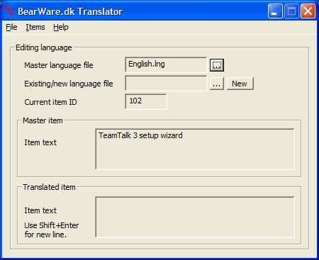
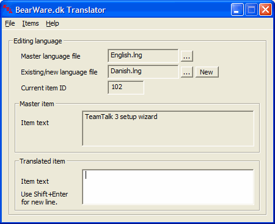
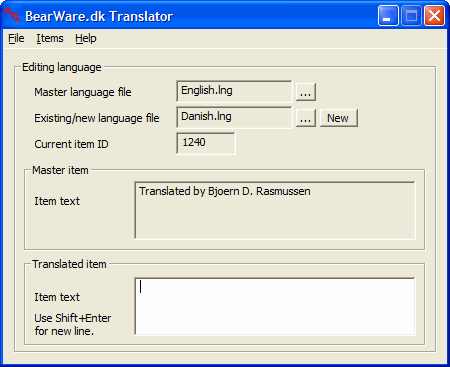

In order to translate TeamTalk to another language you first need to
open the English language file as the master language. Press "File
-> Open master language" and open the file English.lng as the
master language. The English.lng file is located in your TeamTalk
installation folder (most likely C:\Program Files\TeamTalk5). The
Translator window should then look as follows:

Next you create a language file for the language you
want to translate TeamTalk into. Press "File -> New translated
language" and type the name of the language in the dialog box. The
Translator window should then look as follows (in this case Danish is
the language TeamTalk is being translated into):

In the "Translated item"-text box at the bottom you
type in the translated version of what is in the "Master item"-text
box. When you have translated the item you press Enter and you'll go to
the next item. If you want to go back at some point you can press
"Items -> Previous item".
When you come to the item shown below you should type
in your name. It will then appear in the About box.

When you're done translation press "File -> Save
translated item" and copy the new .lng file to the TeamTalk folder. You
can select your language by pressing "File -> Preferences ->
Window -> UI language" in TeamTalk. Note that you need the latest
beta version of TeamTalk to select your language. You can find the
latest beta here.
Please send the new language file (the .lng file) to
contact@bearware.dk once you're done.
Thanks for helping out!